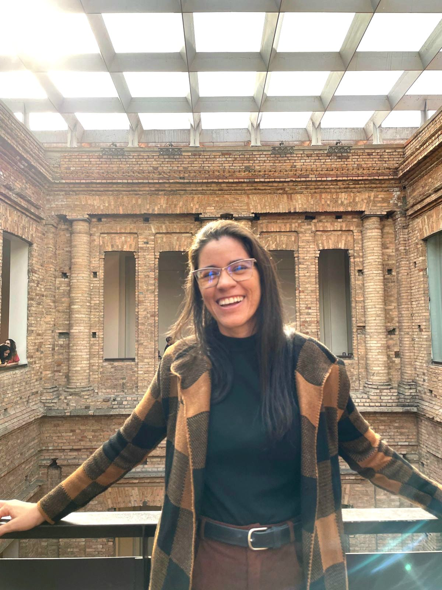

Sobre mim
Olá, meu nome é Ana Karina, e estou em um momento emocionante de transição de carreira,da área de odontologia, onde atuei como Cirurgiã-Dentista, para me dedicar ao campo da tecnologia.
Durante minha carreira na odontologia, desenvolvi habilidades essenciais como análise crítica, atenção aos detalhes e resolução de problemas complexos — qualidades que considero fundamentais também na área de tecnologia. A experiência em lidar com situações desafiadoras no atendimento ao paciente me proporcionou uma sólida capacidade de comunicação e empatia, atributos que pretendo levar para o desenvolvimento de soluções tecnológicas centradas no usuário.
Atualmente, estou me especializando em Análise e Desenvolvimento de Sistemas, com um foco particular em linguagens de programação como Python e C#. Também tenho grande interesse em computação em nuvem e estou constantemente me aprimorando nesse campo, buscando entender como posso aplicar essas tecnologias de maneira eficaz. Estou ansiosa para aplicar meus conhecimentos técnicos e minhas habilidades interpessoais em projetos que possam fazer a diferença. Meu objetivo é contribuir para a criação de soluções inovadoras e eficazes, aprendendo e crescendo profissionalmente na área de tecnologia.
Este portfólio é uma amostra dos meus primeiros passos neste novo e empolgante campo. Acredito que minha perspectiva única, combinando conhecimentos de saúde e tecnologia, pode trazer insights valiosos e contribuir para o desenvolvimento de soluções diferenciadas.
Agradeço por visitar meu portfólio e conhecer um pouco mais sobre minha jornada e aspirações. Sinta-se à vontade para entrar em contato para discutir possíveis colaborações ou apenas para trocar ideias sobre tecnologia e inovação.
Atenciosamente,
Ana Karina.